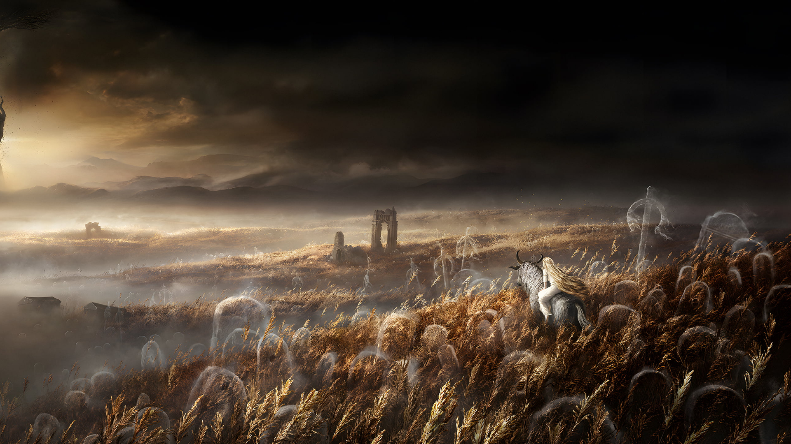
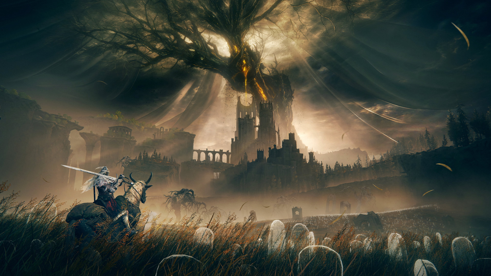
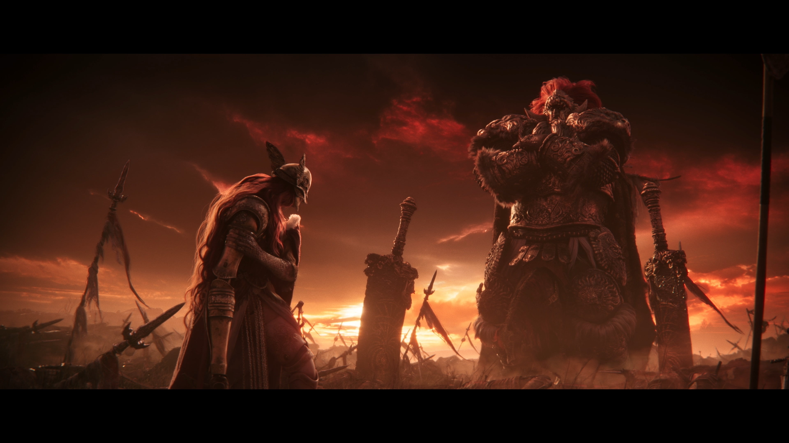

- Assim como no jogo base, a DLC de Elden Ring também contará com grandes áreas abertas, dungeons menores e as “legacy dungeons”, aquelas que geralmente trazem desafios extras e costumam ser opcionais, mas sempre recompensando o jogador no final,Toda essa novidade em termos de exploração na DLC de Elden Ring acontecerá em uma região ainda maior que Limgrave, aquela primeira área depois da introdução do jogo. Isso significa que será um mapa maior que qualquer outro jogo Souls, Bloodborne ou Sekiro,Hidetaka Miyazaki revela ainda que Elden Ring Shadow of the Erdtree terá 10 novos chefes. No trailer revelado, conseguimos ver um gigante de fogo, alguém com uma cabeça que parece de leão e Messmer, um dos destaques do trailer.